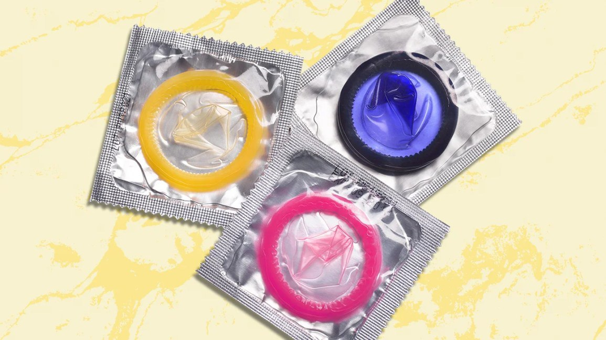

Condoms are a type of contraceptive method that can be used to prevent unintended pregnancies and reduce the risk of sexually transmitted infections (STIs).
They are typically made of latex or polyurethane and are worn by males during sexual activity.
Advantages of using condoms as a contraceptive method include:
...
their high effectiveness in preventing pregnancy when used correctly and consistently,
their availability and affordability,
and their ability to provide protection against STIs.
Additionally, using condoms can be a shared responsibility between partners, allowing for a more equal and communicative sexual relationship.

disadvantages of using condoms include:
the need for consistent and correct use, the potential for breakage or slipping during sexual activity,
the potential for decreased sensitivity during intercourse.
Additionally, some individuals may have allergic reactions to latex condoms, requiring the use of alternative materials.
It's important to remember that condoms are just one of many contraceptive methods available, and it's important to choose the method that works best for you and your individual needs.
If you have any further questions, feel free to ask!
Our professionals are ready to help you